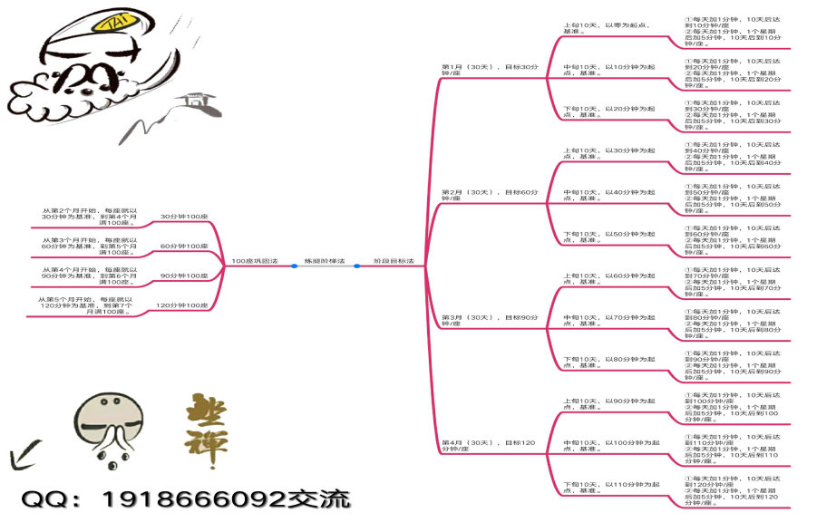

快速突破双盘两小时的阶梯法
——美乐琴心初稿
暂且叫它成功阶梯法吧，时间短的话，可以在半年内可以突破双盘两小时。这种方法可以针对零基础的初学打坐，也可以适用于从散盘到单盘，再提升到双盘，也适用于在短时间内突破颈瓶的禅修者，方法是很简单，就是每天增加一分钟，完美的假设就是每天都打坐，从不间断，哪怕一天一座也行，初学肯下苦功，可以多盘，从量上累积，如果能配合素食就更好。
假设你是初学，从散盘，单盘过渡到双盘，时间从零开始算，一个月算它30天。第一天，双盘一分钟，那么一直加，每天加一分钟加到十天，也就十分钟。到第二个10天时，每次盘腿时以10分钟为基准，每天增加一分钟，那么一个星期就是加到5分钟，或者不加时间，就每天巩固10分钟，到第五天时，一下子加5分钟也行，10天时间达到20分钟。到第三个10天时，每次盘腿时，以20分钟为基准，也是每天增加一分钟，那么一个星期就是加到5分钟，或者不加时间，就每天巩固20分钟，到第五天时，一下子加5分钟也行，10天后时间达到30分钟。1个月后打坐时间为30分钟/座。
第二个月时，上旬10天,以30分钟为基准，为起点，每天加一分钟，或一个星期加5分钟，10天后打坐时间为40分钟。中旬10天,以40分钟为基准，为起点，每天加一分钟，或一个星期加5分钟，10天后打坐时间为50分钟。下旬10天,以50分钟为基准，为起点，每天加一分钟，或一个星期加5分钟，10天后打坐时间为60分钟。2个月目标达成60分钟/座。
第三个月时，上旬10天,以60分钟为基准，为起点，每天加一分钟，或一个星期加5分钟，10天后打坐时间为70分钟。中旬10天,以70分钟为基准，为起点，每天加一分钟，或一个星期加5分钟，10天后打坐时间为80分钟。下旬10天,以80分钟为基准，为起点，每天加一分钟，或一个星期加5分钟，10天后打坐时间为90分钟。3个月目标达成90分钟/座。
如此方法类推，到第四个月时，可达到目标120分钟/座。
但实际操作运用时，没那么顺利容易达到。刚开始都是腿硬，腿痛，腿麻等现象，初学尤其加强拉筋，松跨方面，做足工夫，比如多做晃海动作等，每一个阶段，都坐上100座才有轻车路熟的感觉，才有那么一点舒服。能坐上60分钟，有30分钟是舒服的，能坐上90分钟，大约有60分钟是舒服的，能坐上120分钟，大约有90分钟是可以忍受的，在40-60分钟，70-80分钟，100-110分钟，这三个节点上，会反复忽上忽下，有进有退，腿痛历害，突破了，熬过了，就又前进了一步。任何事情都是熟能生巧，包括打坐也是。每个阶段都是要经过反复的巩固。配合100座的巩固期。
如图所示。

图示只是推算完美理想状态，在实际操作中，特别是巩固90分钟和120分钟这段时间熬的时间比较久，120分钟还要考虑要有充足时间坐，这又涉及到睡眠方面，如果晚上晚睡11:30上床，起码4:00-4:30要起床，坐足两个钟到7:00,往往接近目标值10分钟前是最剧痛的，主要是踝关节痛的厉害，反反复复，所以在前期要配合做动功很重要，做磕大头，把那僵硬，紧密的骨头，通过大礼拜慢慢松开。如果能坚持每天300-500个大礼拜，那么骨头疼痛的程度就会减弱很多。
如果在打坐中出现呼吸比较粗犷，喘气时，再加上腿又痛，要通过大口大口的吸气，才能缓解，那就说明自己的氧气不够了，必须加强腹部呼吸。当本人坐到90分钟，想冲刺120分钟时，经常出现呼吸很粗犷，身上冒汗，腿又痛，我就意识到我的腹部呼吸没练好，动功做得少，从那时起我就加紧练动功，经过两个月的紧敲箩鼓的练习，终于上120分钟，那时印象特深刻，90-110分钟之间全身热烘烘的，蝉鸣声似乎从四面八方涌过来，整个人都虚脱似的，全身骨酥软，有气无力，似乎骨完全剥离肉，是否累到极致才这样的。当时预计一年时间可达到120分钟，实际上比我预计快了几个月，8个月坐上了120分钟，12个月坐上了180分钟。虽达到120分钟/座，但在后面的时间在巩固60分钟，90分钟，状态好，时间充足坐120分钟，经过2年的练习打磨，降魔座比较轻松坐上120分钟，有那么十几分钟或几分钟很痛时，也能咬咬牙忍下就过去了，至于腿弱的吉祥座，经过一年多的煎熬，打磨，坐上90分钟稍为轻松，坐上120分钟有三四成的轻松，从今年18年4月份起，吉祥座坐的时间以少量多次集中方法练习，两腿除了每天轮流正常互换外（今天降魔座，明天吉祥座），只要坐着看书，读经就以吉祥座为主，可以双盘读经60分钟以上了。
练腿阶段谈不上什么心法，多数以持大悲咒为主，不会整个过程都持，在腿痛，用来分散腿痛注意力上持，时间以一秒秒地过，忍不住频频看时间，为了多坐久点，顾不了那么多，什么姿势都行，往前趴，抱腿，往后靠被，到时间才下。目标还是要有的，不达目标就放弃了，就会心生后悔，多熬一分就少受一份罪，痛苦迟早要受的，提早受报，提早轻松。如果坚持每天一座，再怎么难，一年后都能坐上120分钟/座。
以上简略写点个人体悟，参考书籍《坐禅》，《坐禅之问答录》，《禅学·双盘》。
感恩十方三世诸佛菩萨慈悲加持护佑，感恩阿弥陀佛，感恩观世音菩萨，感恩大愿地藏王菩萨，感恩十方三世一切贤圣僧，一切善知识！阿弥陀佛！！！
欢迎进QQ群交流（请注明看到文章加入）：
①欢迎加入TaiGuangLin(1群)，群聊号码：178818909
②欢迎加入美美的十方结缘分享群，群聊号码：295325688
无版权，欢迎转发分享！！